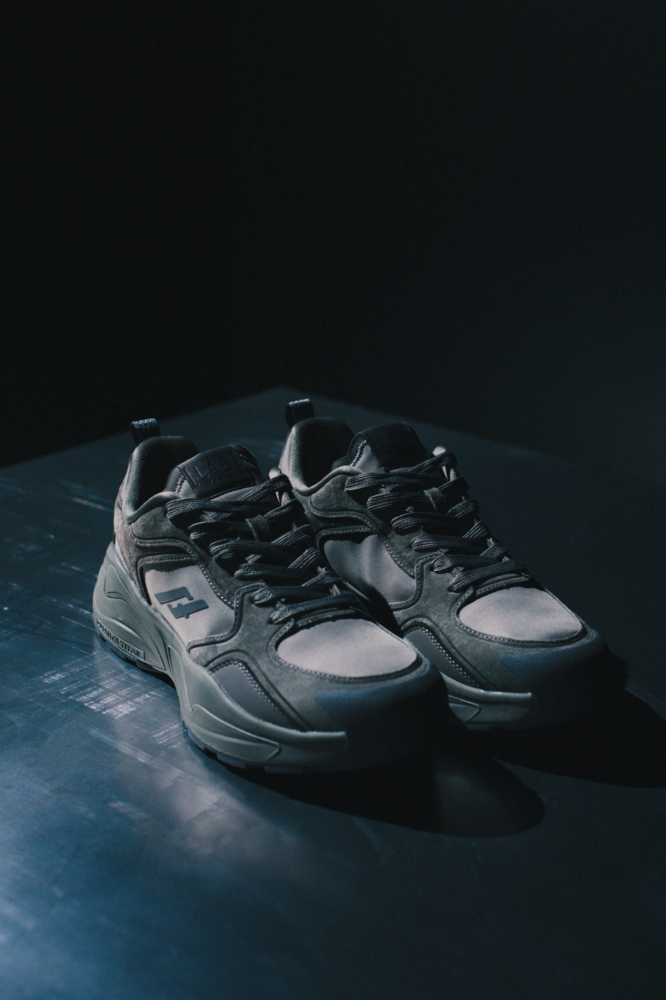
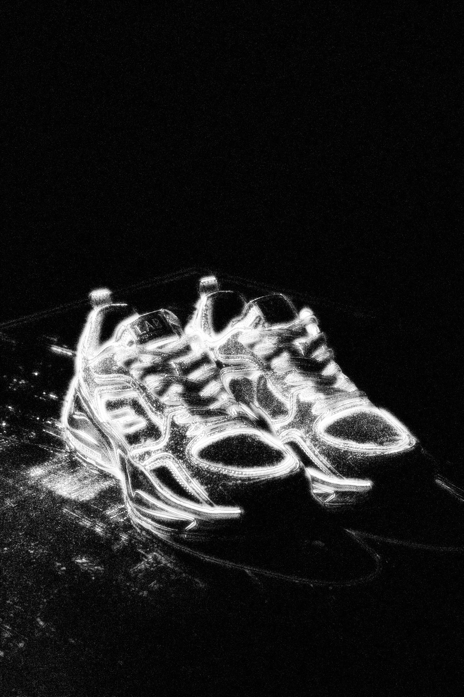
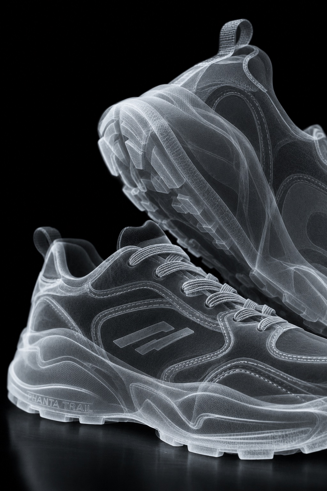

CAMISETA
HELIX
TECNOLOGÍAFEEL
Equilibrio: cómo se siente la prenda sobre la piel.
- Ultra fresh touch
- Suavidad + frescura
- Caída natural
- Construcción ligera
QUEST[LAB] / LANZAMIENTO 2026
Diseño, tecnología y funcionalidad en prendas pensadas para acompañar el movimiento de cada día.
VER COLECCIÓNCada prenda nace de una tecnología. Una idea por prenda, sin ruido.
CAMISETA
Equilibrio: cómo se siente la prenda sobre la piel.
CAMISETA
Precisión: libertad para moverte sin restricciones.
CAMISETA
Definición de la tecnología pendiente.
CHAQUETA
Protección integrada al diseño.
{RENDIMIENTO}
Hay una tecnología que se ve, y hay una que no. La que no se ve es la que realmente importa.


MUEVE EL CURSOR PARA ESCANEAR